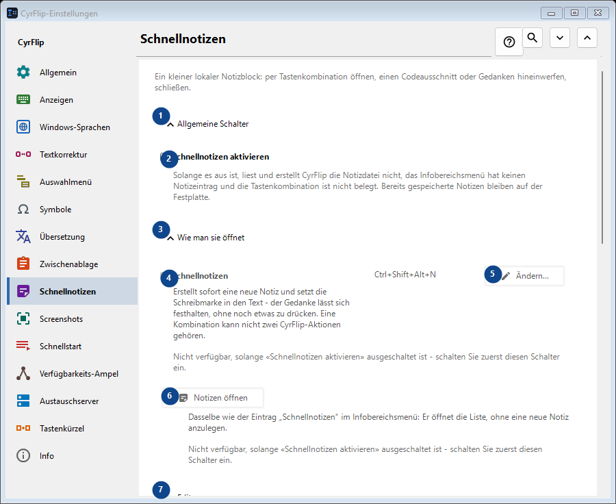
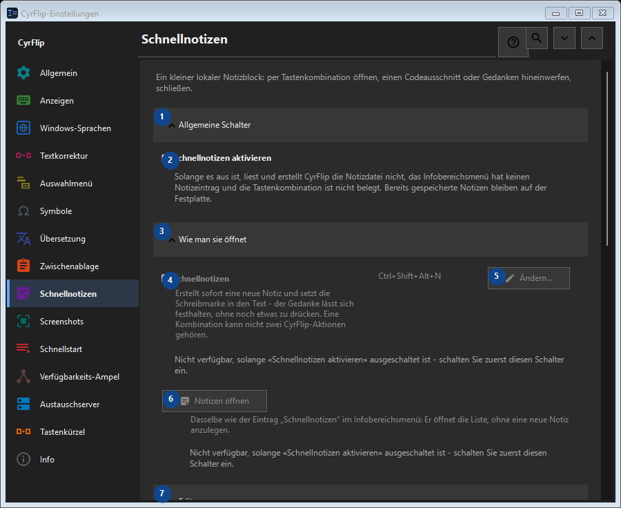

Schnellnotizen
Zweck
Ein kleiner lokaler Notizblock: per Tastenkombination öffnen, einen Codeausschnitt oder Gedanken hineinwerfen, schließen.


Reihenfolge
Einstellungen gelten sofort. Eine feste Reihenfolge ist nicht nötig; nutzen Sie die Gruppen unten.
Elemente
1. Allgemeine Schalter
Nutzen Sie diesen Befehl für die genannte Aktion. Lesen Sie eine Bestätigung, bevor Sie zustimmen.
Ihre Tastenkürzel2. Schnellnotizen aktivieren
Solange es aus ist, liest und erstellt CyrFlip die Notizdatei nicht, das Infobereichsmenü hat keinen Notizeintrag und die Tastenkombination ist nicht belegt. Bereits gespeicherte Notizen bleiben auf der Festplatte.
Ihre Tastenkürzel3. Wie man sie öffnet
Nutzen Sie diesen Befehl für die genannte Aktion. Lesen Sie eine Bestätigung, bevor Sie zustimmen.
Ihre Tastenkürzel4. Schnellnotizen
Nicht verfügbar, solange «Schnellnotizen aktivieren» ausgeschaltet ist - schalten Sie zuerst diesen Schalter ein. Dieses Element ist derzeit nicht verfügbar. Aktivieren Sie zuerst die Funktion oder wählen Sie einen Eintrag.
Ihre Tastenkürzel5. Ändern - Schnellnotizen
Nicht verfügbar, solange «Schnellnotizen aktivieren» ausgeschaltet ist - schalten Sie zuerst diesen Schalter ein. Dieses Element ist derzeit nicht verfügbar. Aktivieren Sie zuerst die Funktion oder wählen Sie einen Eintrag.
Ihre Tastenkürzel6. Notizen öffnen
Nicht verfügbar, solange «Schnellnotizen aktivieren» ausgeschaltet ist - schalten Sie zuerst diesen Schalter ein. Dieses Element ist derzeit nicht verfügbar. Aktivieren Sie zuerst die Funktion oder wählen Sie einen Eintrag.
Ihre Tastenkürzel7. Editor
Nutzen Sie diesen Befehl für die genannte Aktion. Lesen Sie eine Bestätigung, bevor Sie zustimmen.
Ihre Tastenkürzel8. Lange Zeilen im Editor umbrechen
Nicht verfügbar, solange «Schnellnotizen aktivieren» ausgeschaltet ist - schalten Sie zuerst diesen Schalter ein. Dieses Element ist derzeit nicht verfügbar. Aktivieren Sie zuerst die Funktion oder wählen Sie einen Eintrag.
Ihre Tastenkürzel9. Export und Speicherung
Nutzen Sie diesen Befehl für die genannte Aktion. Lesen Sie eine Bestätigung, bevor Sie zustimmen.
Ihre Tastenkürzel10. Beim Export die Daten hinzufügen
Nicht verfügbar, solange «Schnellnotizen aktivieren» ausgeschaltet ist - schalten Sie zuerst diesen Schalter ein. Dieses Element ist derzeit nicht verfügbar. Aktivieren Sie zuerst die Funktion oder wählen Sie einen Eintrag.
Ihre Tastenkürzel11. Alle Notizen nach Markdown exportieren...
Nicht verfügbar, solange «Schnellnotizen aktivieren» ausgeschaltet ist - schalten Sie zuerst diesen Schalter ein. Dieses Element ist derzeit nicht verfügbar. Aktivieren Sie zuerst die Funktion oder wählen Sie einen Eintrag.
Ihre Tastenkürzel12. Alle Schnellnotizen löschen
Nicht verfügbar, solange «Schnellnotizen aktivieren» ausgeschaltet ist - schalten Sie zuerst diesen Schalter ein. Dieses Element ist derzeit nicht verfügbar. Aktivieren Sie zuerst die Funktion oder wählen Sie einen Eintrag.
Ihre Tastenkürzel13. Auf einen anderen Computer übertragen
Nutzen Sie diesen Befehl für die genannte Aktion. Lesen Sie eine Bestätigung, bevor Sie zustimmen.
Ihre Tastenkürzel14. Exportieren...
Eine offene Textdatei mit Ihren Notizen und dem gewählten Zwischenablage-Verlauf: in jedem Editor oder auf dem Handy lesbar und auf einem anderen Computer in CyrFlip importierbar. Die Datei wird nicht verschlüsselt. Der Import zeigt, was hinzugefügt wird, und löscht nichts.
Ihre Tastenkürzel15. Importieren...
Nutzen Sie diesen Befehl für die genannte Aktion. Lesen Sie eine Bestätigung, bevor Sie zustimmen.
Ihre Tastenkürzel